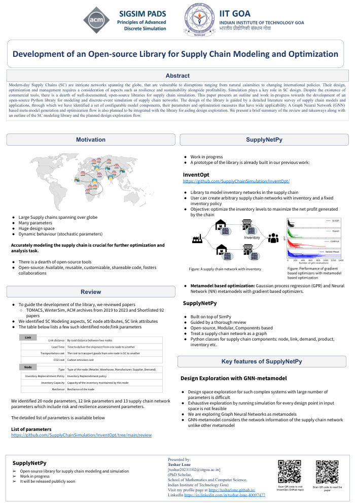
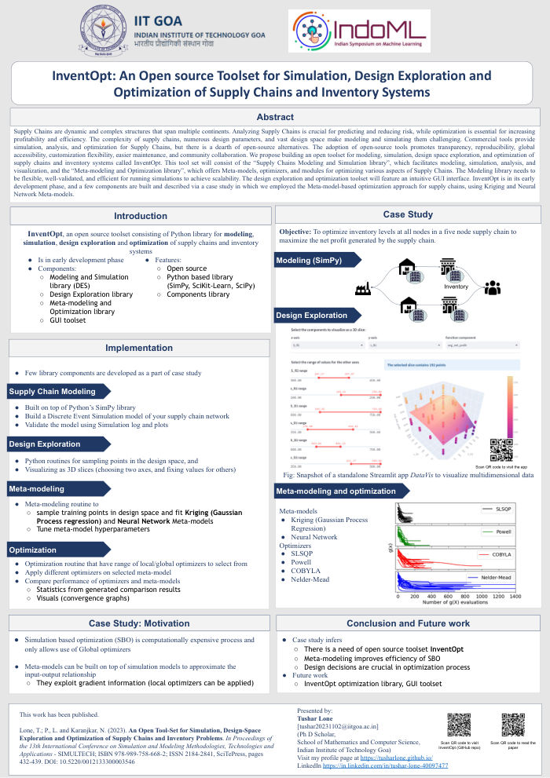
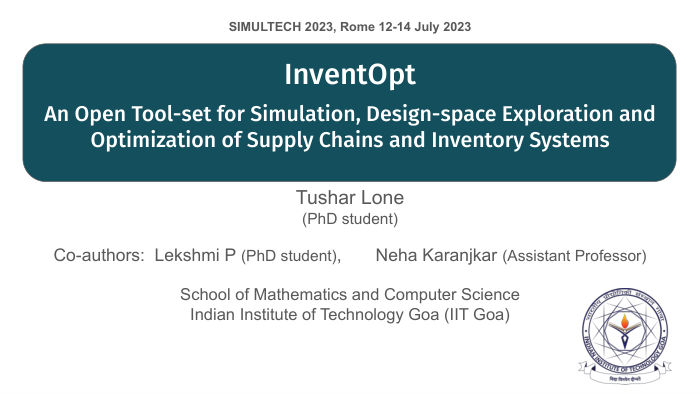

| Role | Institution | Website | Duration |
|---|---|---|---|
| Assistant Professor (TEQIP-III) |
Department of Computer Science and Engineering, Samrat Ashok Technological Institute, Vidisha, Madhya Pradesh. |
satiengg.in | Aug 2018 to Aug 2020 |
| Assistant Professor (TEQIP-III) |
Department of Computer Science and Engineering, University College of Engineering and Technology, Bikaner, Rajasthan. |
btu.ac.in | Jan 2018 to Aug 2018 |
| Front End Developer | Frugal Product Services LLP Hyderabad, Telangana |
frugaltesting.com | Jan 2017 to Sep 2017 |
| Event | Details | Date | Location |
|---|---|---|---|
| SIGSIM-PADS 2024 | 38th ACM SIGSIM Conference on Principles of Advanced Discrete Simulation Presented two-page extended abstract "Development of an open-source library for supply chain modeling and optimization" (presented online) |
June 2024 | Atlanta, GA, USA (online) |
| IndoML | The Fourth Indian Symposium on Machine Learning | Dec 2023 | IIT Bombay |
| Workshop: Perspectives on 'How to do Research' | Three-day workshop | July 2023 | IIT Goa |
| SIMULTECH 2023 | 13th International Conference on Simulation and Modeling Methodologies, Technologies and Applications (Attended and presented paper online) |
July 2023 | Rome, Italy (online) |
| RSC 2023 | 3rd Research Scholars’ Confluence | Sep 2023 | IIT Goa |


